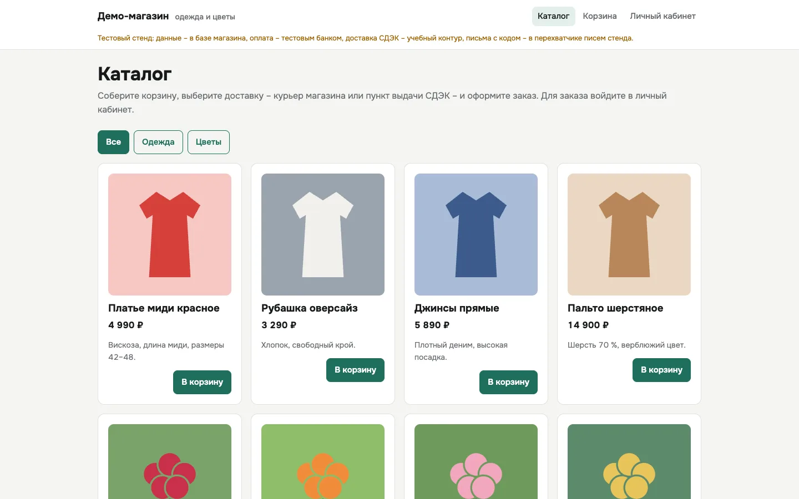
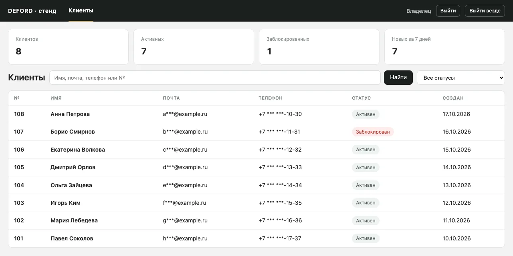
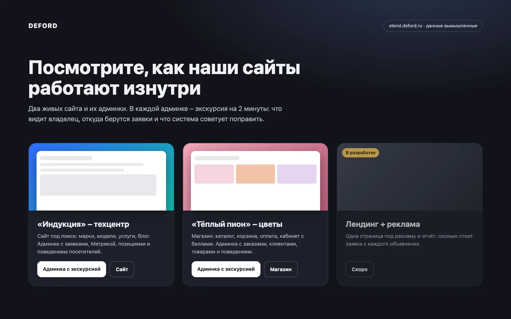
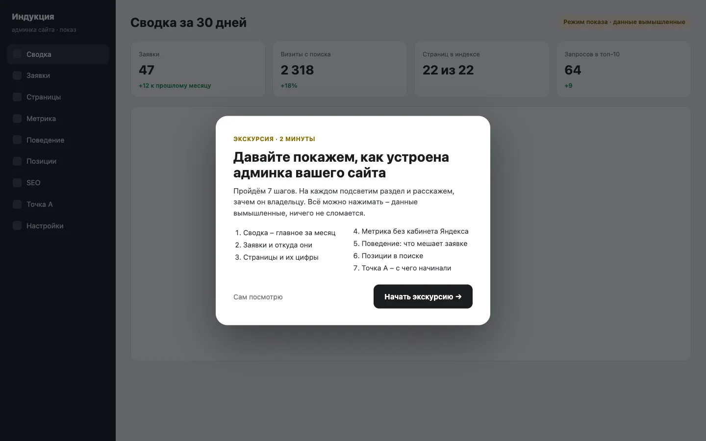
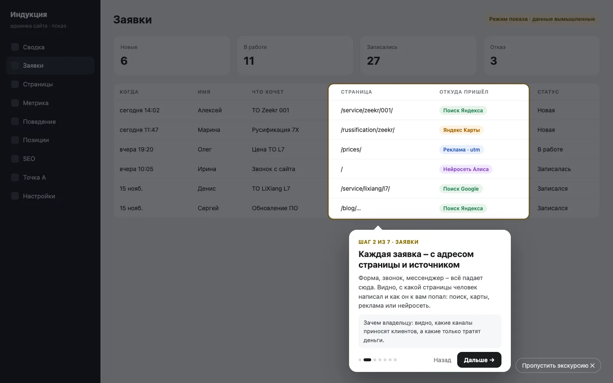
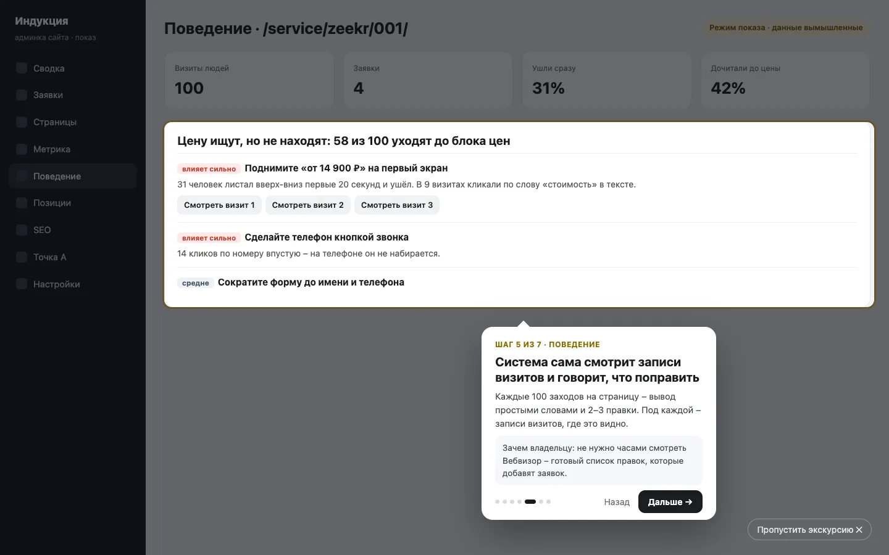
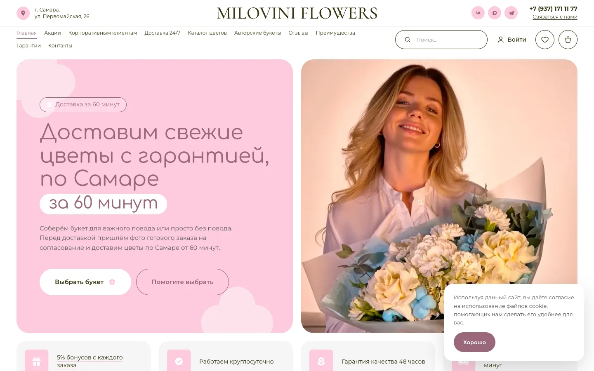
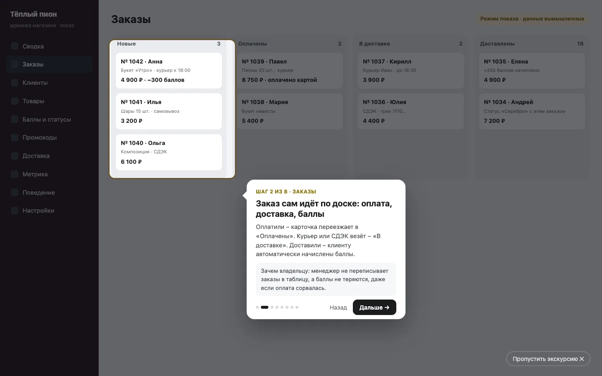
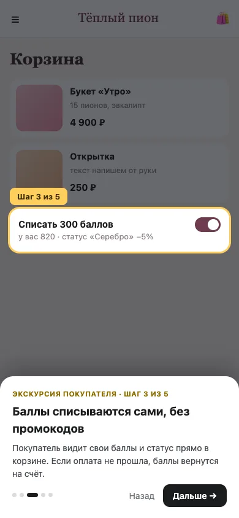

Стенды: два живых сайта и админки с экскурсией
Вывод. Нормальных стендов для показа сейчас нет. Предлагаю сделать заново на stend.deford.ru два живых сайта: техцентр «Индукция» под поиск и магазин цветов «Тёплый пион». В каждой админке будет экскурсия: подсветка раздела и всплывашка «что это и зачем владельцу». Ниже картинки, как это будет выглядеть. Ответь «да» или поправь по номерам, и я начну с общей страницы.
1. Что есть сейчас (проверил 17.11): показать клиенту нечего
- stend.deford.ru и поддомены не заведены, кода стендов нет. Карту от 15.11 так и не начали верстать.
- Магазин store.deford.ru работает (корзина, баллы, СДЭК, вход по коду). Но витрина собрана как черновик: рисованные футболки, одежда вперемешку с цветами.
- В админке магазина только «Клиенты» и «Заказы», а на входе стоит 2FA. Клиент туда сам не зайдёт.
- Полная админка есть только у EV (Заявки, Метрика, Поведение, Позиции, SEO, Точка А). Но в ней живые заявки клиентов EV, а их показывать нельзя.


2. Что делаю: общая страница, два сайта, экскурсия
Общая страница stend.deford.ru
С неё начинается показ: три карточки, у каждого сайта две кнопки – «Админка с экскурсией» и «Сайт». Лендинг с рекламой пока висит как «в разработке».

Сайт техцентра «Индукция»: 22 страницы и админка как у EV
- Сайт строю по карте от 15.11: две марки, ТО и русификация, цены, блог, юридические страницы.
- Админка – та же, что у EV, на вымышленных данных: заявки с источниками, Метрика, позиции, поведение с выводами Лупы, Точка А.
- При первом входе открывается приветствие и экскурсия на 7 шагов. Кнопка «?» запускает её заново.



Магазин «Тёплый пион»: дизайн Milovini, движок store.deford.ru
- Внешний вид беру по нашему шаблону Milovini: живые фото, мягкие цвета, удобно на телефоне. Букеты свои, товары Milovini не берём.
- Внутри работает по-настоящему: корзина, баллы и статусы, промокоды, доставка (СДЭК в учебном режиме), кабинет покупателя.
- В админку добавляю разделы: сводка, товары, баллы и статусы, промокоды, доставка, Метрика, поведение. Экскурсия по админке – 8 шагов.
- Для покупателя на телефоне отдельная короткая экскурсия на 5 шагов: каталог → корзина → баллы → оплата → кабинет.



3. Как устроена экскурсия и режим показа
- Экскурсию пишу сам на Preact (наш стек островов), без чужой библиотеки. Тексты всех шагов лежат в одном файле, поправить их можно без программиста.
- Каждый шаг отвечает «зачем владельцу», а не «куда нажать». Это рассказ про систему, а не инструкция.
- Режим показа: данные вымышленные, нажимать можно всё. Ночью стенд возвращается в исходное состояние, а визиты в «Поведении» обновляются, как в демо Лупы.
- Ту же экскурсию потом можно включить в боевые админки клиентов: она покажет новому владельцу его кабинет.
| Шаг | Что | Время |
|---|---|---|
| 1 | Домен в reg.ru, общая страница stend.deford.ru, общий пароль | 2–3 ч |
| 2 | Экскурсия (Preact) + приветствие, проверка на 1440 и 390 | 4–5 ч |
| 3 | Сайт «Индукция»: 22 страницы, админка-копия EV на вымышленных данных, 7 шагов | 12–16 ч |
| 4 | Фото букетов (≈30, генерация), витрина «Тёплый пион», второй экземпляр движка | 10–14 ч |
| 5 | Новые разделы админки магазина, 8 + 5 шагов экскурсии, приёмка | 8–10 ч |
Итого 36–48 часов, при часе 1000 ₽ это 36–48 тыс. ₽ себестоимости, 4–5 рабочих дней. Каждый шаг – с коммитом и ссылкой.
Нужно от тебя: «да по рекомендациям» или правка по номеру
- Вход для показа. Рекомендую: общий пароль на весь стенд (одна строка, ты отдаёшь её клиенту), а в админке кнопка «Войти как гость» без 2FA. Второй вариант – вообще без пароля, только закрыть от поисковиков: проще, но открыть сможет любой.
- Магазин – отдельный экземпляр shop.stend.deford.ru на том же движке. store.deford.ru рекомендую оставить программистам для разработки: там проверяют СДЭК и оплату, и показ будет им мешать.
- Фото букетов генерирую сам через Codex на подписке, это 0 ₽. Своих фото у вымышленного бренда нет, поэтому рисуем с нуля. Вариант через Segmind дороже и по качеству для букетов не нужен.
- Названия «Индукция» и «Тёплый пион». Запасные: «Обская тяга» и «Лист и лента».
- Ещё по Метрике (вопрос с 15.11). У Ю-Клуба и Анжелы в Краснодаре та же дыра, что была у EV: защита сайта блокирует часть адресов Метрики, и визиты теряются. Сказать их чатам?
Что раскрыть: список шагов экскурсии с текстами, как будут ночью обновляться данные, что из админки EV переносится как есть, а что упрощаю.